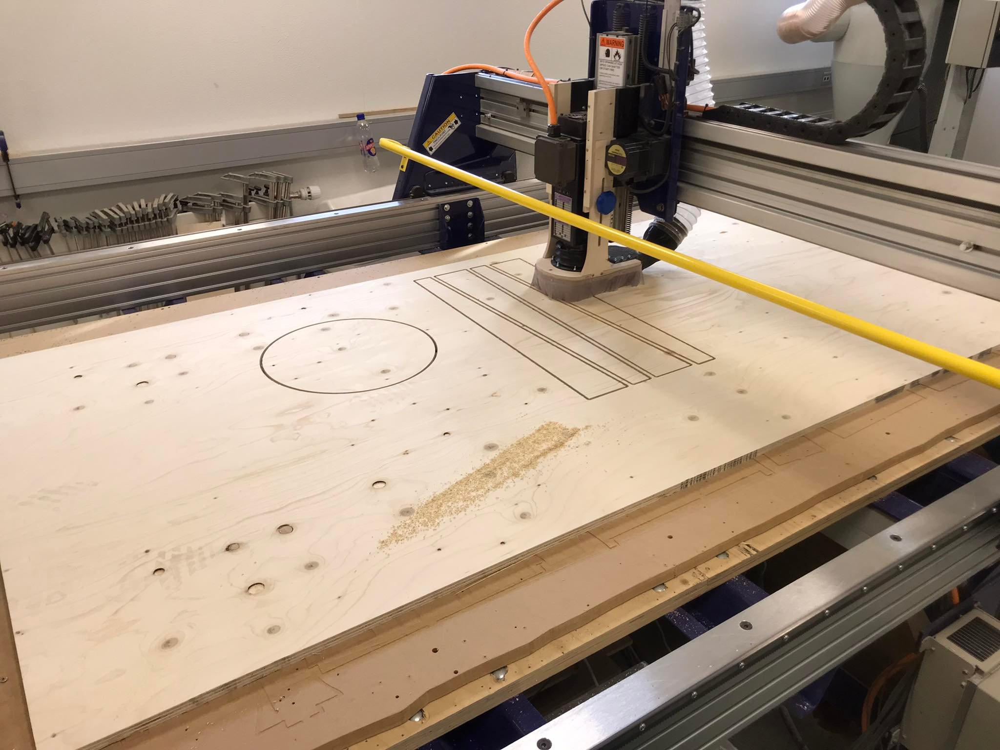
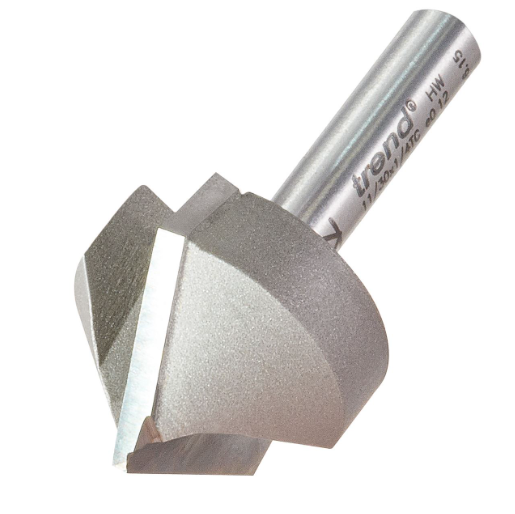
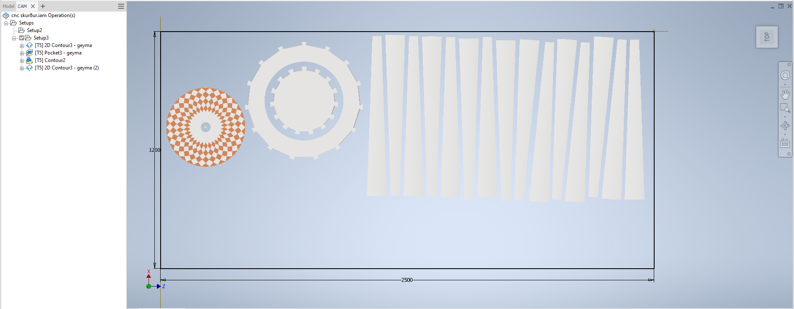
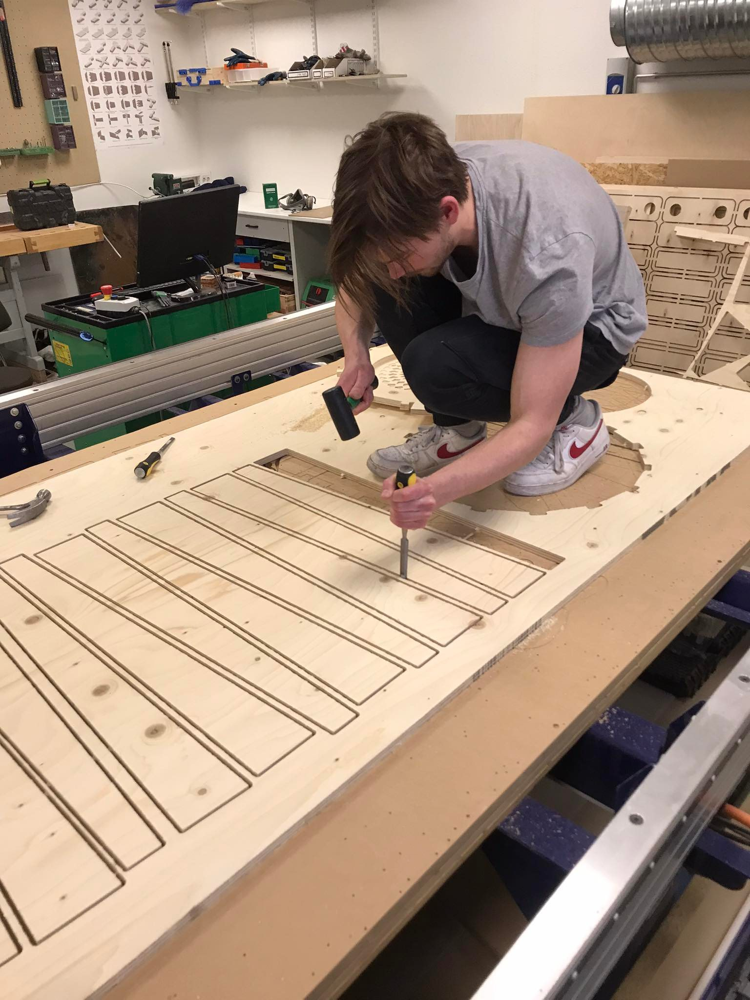
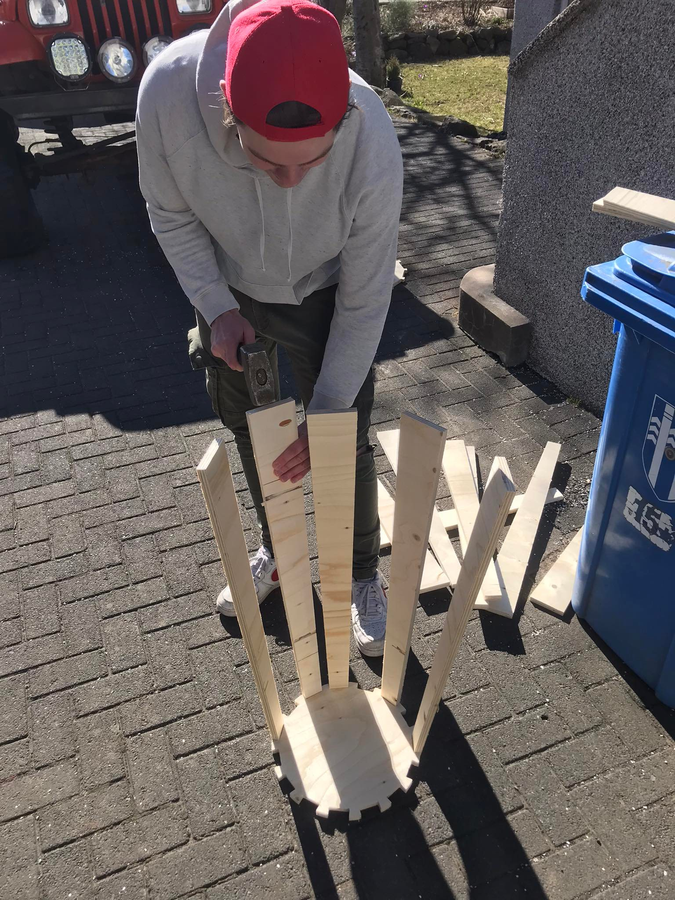
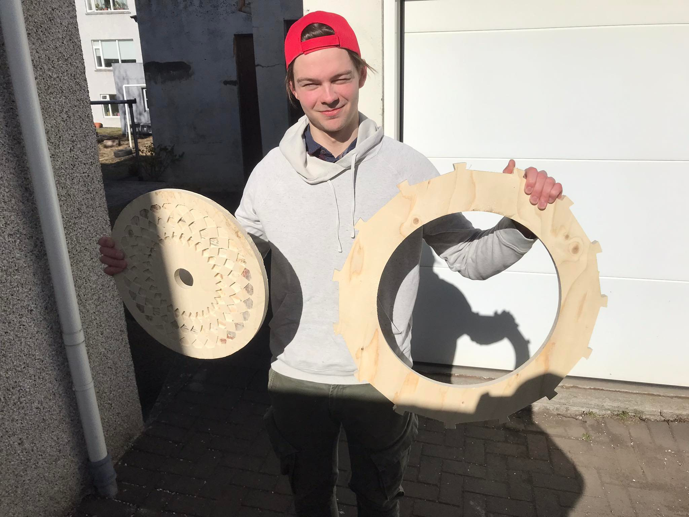
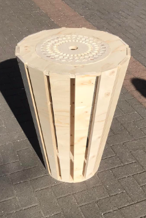
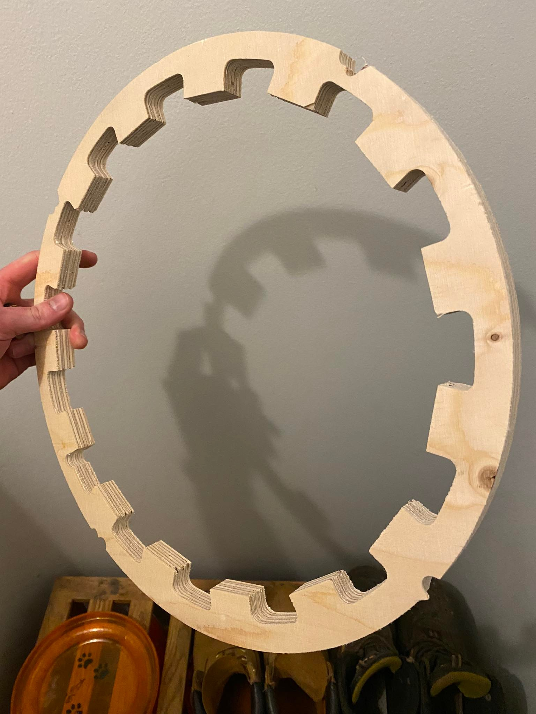
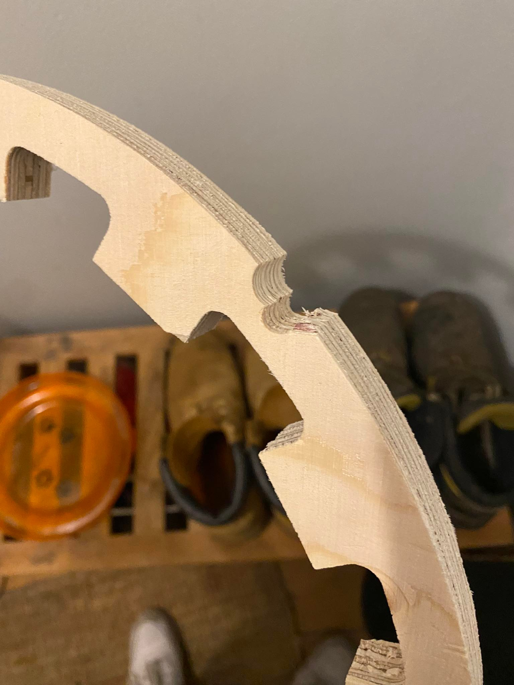

Framleiðsla
Undirbúningur framleiðslu
Við höfðum bókað pláss í Fab lab reykjavík kl 12:00 laugardaginn 9.apríl eftir að við mættum og eftir stutt spjall við Hafliða var ákveðið að við myndum hitta Jón Þór á fjarfundi í ljósi þess að skurðurinn eins og við höfðum undirbúið hann í Inventor hefði tekið um 6 tíma. Hafliði hafði sagt okkur frá einni þumalputtareglu þ.e að 1 klst í undirbúningi stytti skurðinn um 3 tíma. Með það í huga leyst okkur vel á að hitta Jón Þór. Hann gat reyndar ekki hitt okkur fyrr en um 2 leytið þar sem hann var að fylgjast með sínum mönnum í United tapa á móta Everton. Það virkaði reyndar fínt fyrir okkur því það gaf okkur tíma til að taka saman smá gögn til að senda á hann, einnig nýttum við tímann og fórum að borða því við vissum að það væri löng vakt fram undan.
Rétt yfir kl 14 settumst við inn í Fundaraðstöðuna og tókum discord fund með Jóni Þóri. Hann byrjaði fundinn á að segja okkur að hermunartíminn sem inventor gæfi myndi raungerast sinnum 3 þ.e 6 tímarnir sem við höfðum verið með hefðu tekið um 18 tíma, fundurinn því strax búinn að borga sig margfalt. Við höfðum haldið að hægt væri að halla spindúlnum og höfðum því hannað með það í huga Hafliði var nú þegar búinn að segja okkur að svo væri ekki hinsvegar væru til bitar líkir þeim sem sést á myndinni hér að neðan. Svona biti með 45° halla var til hinsvegar ákváðum við til einföldunar að skera einungis með einum 6mm bita til að stytta tímann en þegar hingað var komið til sögu var tími orðið krítískt element þar sem framleiðsla á öllum verkefnum átti að klárast í dag. Með hjálp Jón Þór stilltum við toolpaths upp á nýtt og tókum ákvörðun að við myndum einfalda nokkur form eftir fundinn. Fjallað verðum um bæði hér að neðan. Með þessu náðum við að stytta skurðartímann úr 6 tímum niðrí 40 mín.
Einfaldanir
Fyrsta sem við einfölduðum var að eins og kom fram í hönnunar hlutanum þá voru framhliðar lappana sweepaðar þannig að þær myndu flúkta við hringinn á borðplötunni. Til að breyta þessu þurfti ekki að breyta teikningunum heldur stilltum við toolpaths bara þannig að ekki var fræst yfir þetta svæði. Annað sem þurfti að ganga í var það að við höfðum hannað miðju diskinn með halla undir honum eins og sést á mynd 2 svo hægt væri að leggja hann ofan í borðplötuna. Til að framkvæma þetta hefðum við þurft að snúa plötunni við í miðjum skurði en auk þess að vera tímafrekt þá krefst það gífurlegrar nákvæmni þannig til einföldunar stilltum við toolpaths þannig að fræsirinn skæri beint niður úr efra plani disksins og útkoman því eins og sést á mynd 3 hér að neðan.
Það sem nú vantaði uppá var að halli var í fingurgötum á botn og borðplötu. Það var leyst með því að fara oftar og fínna í þau svæði með 6mm bitanum en það var ekki hægt að nota bita líkan þeim sem er á mynd 1 hér því hann nær ekki út í hornin á fingurgötunum. Annað sem kom upp varðandi hallan á plötunum er það að hann var sitt á kvað en það var leyst með því að snúa botnplötunni við í teikningunni en þannig snéri hallinn eins í planinu.
Síðan til að stytta tímann aðeins meira þá einfölduðum við tígulmynstrið á miðjudisknum aðeins. þ.e gerðum það örlítið grófara þannig að 6mm bitinn gæti ráðið betur við það.
Önnur smávægileg breyting sem við þurftum að gera var að við höfðum raða hlutunum á 1500x1500mm plötu sem kom í ljós að var ekki til og því þurftum við að endurraða á 1200x2500mm plötu.
Toolpaths
Notast var við 4mm skurðardýpt og reynt var að fræsa ekki of mikið á sama stað á stuttum tíma. Byrjað var að nota 2D Contour til að skera út megnið af hlutunum, byrjað var með 6mm skurðardýpt en síðan minnkað niður í 4mm per umferð. Við leyfðum Inventor að ákveða hvar styrktarflipar væru, við vildum ekki að hlutirnir færu á flakk meðan fræsirinn væri að vinna. Meðal annars var fræst fæturnar, lokið á fótunum og innri hringur af borðplötu. Eftir það var notað 2D Pocket til að fræsa lokið því það er töluvert flóknara form og inniheldur mikið af mismunandi dýptum. Fræsirinn klárar það og byrjar síðan að skera alla hallandi fleti með hjálp 3D contour. Hann þarf að geta séð hver prófíllinn á hallanum er og því var ekki hægt að nota 2D Contour. 3D Contour var notað í finger joints þar sem fæturnir á borðinu voru hallandi. Bæði borðplata og botninn eru með svona samsetningum. Seinast en ekki síst var notast við 2D Contour enn og aftur fyrir ytri hluta af borðplötu og botn. Ástæðan fyrir því var að Inventor valdi asnalega staði fyrir flipanna á þessum stöðum og í staðinn fyrir að velja staðsetninguna á öllum flipunum gátum við sloppið með að velja góða staðsetningu fyrir fjóra flipa fyrir hvern hring fyrir sig. Hér að neðan má sjá hlutina eins og þeim var raðað á 1200x2500mm plötuna
Fræsingin
Þegar hingað var komið til sögu var klukkan 17:30 og ekki seinna vænna en að byrja fræsa.
Fræsirinn sem notast var við er stóri fræsirinn uppí fab lab reykjavík og heitir shopbot. Hann hafði verið í notkun frá kl 13 og þvi óþarfi að keyra upphitunar prógrammið. Fyrsta skref var að taka til plötu leggja hana á fræsiborðið og skrúfa hana niður í öll horn til að ná henni alveg þétt niður þurfti að fara uppá borð og standa á henni til að þrýsta henni alveg niður. Þá var hægt að ýta á post process í inventor og vista þetta sem sbt skrá og setja hana á usb lykil sem var síðan settur í tölvuna sem er tengd fræsinum.
6mm bitinn var í fræsinum þannig ekki þurfti að skipta um bita, næst var núllpunkturinn valinn eftir auganu. Þegar Hafliði skoðaði síðan uppsetninguna leyst honum ekki á hversu lítið pláss væri milli lappa og enda plötunnar. Því fór hann í tölvuna sem tengd er fræsinum og "offset-aði" teikningunni aðeins til að minnka líkunar á að það myndi brotna uppúr. Því næst settum við fræsinn í gang en stoppuðum hann stuttu seinna með því að ýta á space takkann því hann gaf frá sér ískur hljóð sem gaf til kynna að hann væri að fara of djúpt því breyttum við dýptinni úr 6mm í 4mm og settum hann aftur í gang. Eftir þessa breytingu gekk hann eins og vel smurð vél, Við þurftum að stoppa hann með space takkanum tvisvar í gegnum skurðinn þar sem það sem hlutir höfðu losnað. Þess utan gekk skurðurinn vel og var skurðtíminn milli 17:45 og 19:30 aðeins yfir þeim 40mín sem hermunin í inventor gaf til kynna en samt sem áður í takt við það sem Jón Þór hafði sagt okkur.
Þegar fræsirinn kláraði þurftum við að hafa hraðar hendur því klukkan orðin margt. Fyrsta skref var að losa skrúfurnar síðan voru tabsin tekin með sporjárni og pörtunum safnað saman, síðan söguðum við afsagið niður í einingar sem henta fyrir förgun og herbergið ryksugað hátt og lágt. Tiltektin tókst á korteri og gengum við út úr fablab um 19:45.
Samsetning
Við sögðum þetta gott eftir vaktina uppí fablab á laugardeginum en tókum aftur upp hanskan mánudaginn 11.apríl og settum borðið saman. Fyrst settum við botninn á jörðina og festum fætuna í fingurgötin, næst settum við diskinn í borðplötuna og svo fætuna í fingurgötin á borðplötunni.
  Samsetningin heppnaðist afar vel, betur en við höfðum þorað að vona sérstaklega í ljósi þessa að við þurftum að einfalda mikið í flýti til að geta komið borðinu í skurð. Fingur götin héldu að mestu og skrúfu boxið sem við höfðum tekið til lá eftir ósnert. Ef taka ætti borðið í einhverja reglulega notkun væri ekki óvitlaust að grípa til trélíms því fingurgötin misþétt. Diskurinn í miðjunni var í það þéttasta og einungis hægt að koma honum í og úr með herkjum. Því þyrfti að fara með juðara á hann til að snýða hann betur að gatinu.
Umræða
Feill sem varð á er að innsti hluti tígulmynstrins eins og það sést á toolpath myndinni var of fínn fyrir 6mm bitann þannig fræsirinn fór ekki í það að reyna fræsa það út.
Í eitt af skiptunum sem við þurftum að stoppa fræsinn var þegar hann byrjaði að fræsa þar sem hann átti ekki að fræsa. Eftir á fórum við í saumana á þessu og komust að því að við gleymdum að stilla á Remaining Stock þannig fræsirinn vildi fara aftur yfir hringinn sem sést hér að neðan og skera flipana í burtu.
 